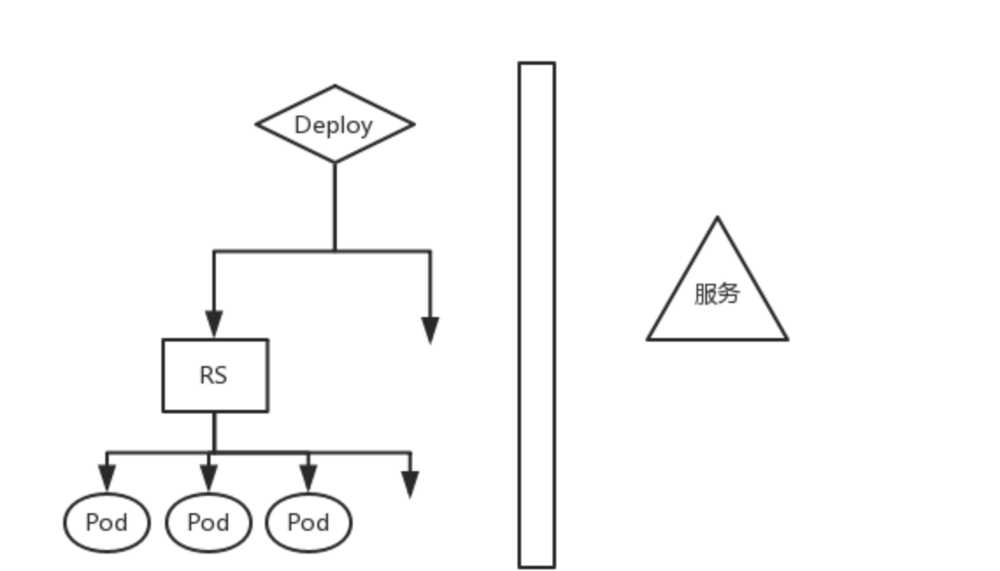
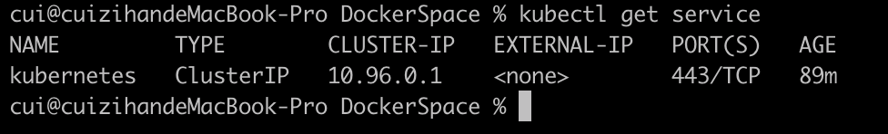
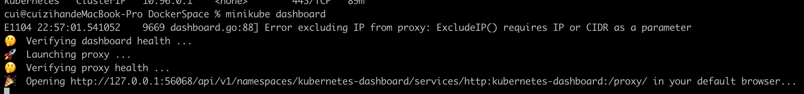
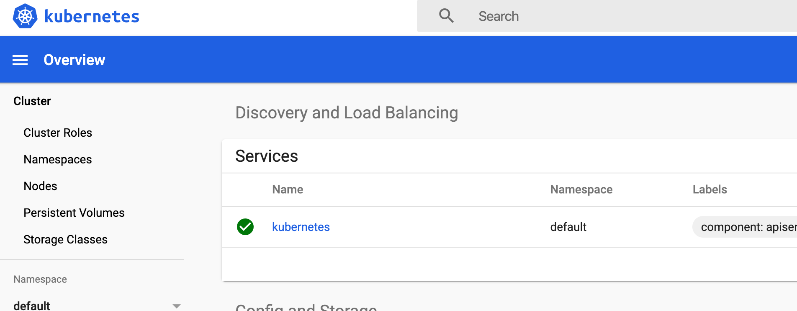
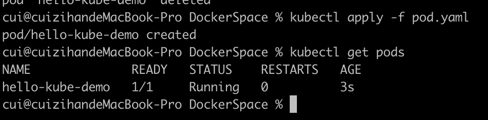
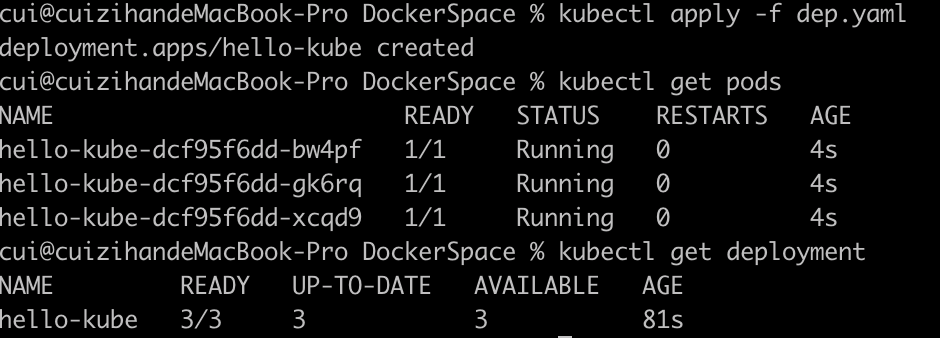
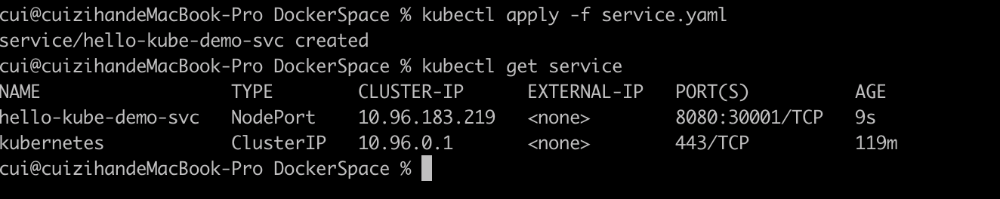
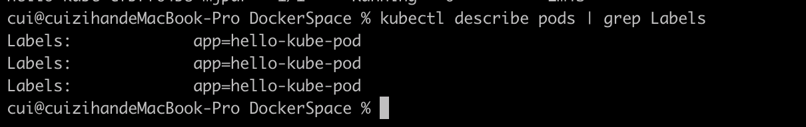
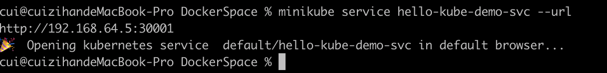
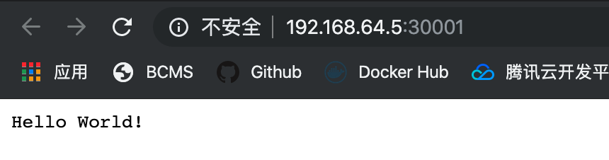

K8s简单实践
Kubernetes 重要概念
deployment 控制replicationset，replicationset控制Pod。共同构成了一个服务，向外提供稳定可靠的service。

- pod： pod是一个逻辑概念，是k8s资源调度的单元，一般会把一组功能强相关的容器逻辑上称之为一个pod。逻辑上，pod表示某种应用的一个实例，比如一个典型的web应用由前端、后端及数据库构建而成，这三个组件运行在各自的container中，我们可以创建包含这3个container的pod。
- ReplicationSet：简称rs。是pod的复制抽象，用于解决pod的扩容缩容问题。通常，在分布式应用中，为了性能或高可用性的考虑，需要复制多份资源，并且根据负载情况动态伸缩。通过rs，我们可以指定一个应用需要几份复制，当某个pod宕机时，会自动创建新的pod进行替换。以保证有足够的复制。
- Deployment：Deployment在继承pod和Rs所有特性的同时，他可以实现对template模板进行实时滚动更新。只要在deployment描述想要的目标状态时什么，deployment controller会帮你讲pod和rs的实际状态改变到目标状态。
Minikube配置
minikube是对kubernetes集群的本地模拟，在kubernetes的学习过程中，可以在minikube上学习kubernetes的常规用法。
先安装kubectl
brew install kubectl
在Mac os上可以用homebrew来安装minikube，在命令行中运行如下的指令：
brew cask install minikube
在启动minikube集群之前，要确保机器上拥有可以创建虚拟机的软件，官方给出了三种选择 1、hyperkit 2、virtual box 3、vm fusion。这里我安装了virtual box。
然后初始化minikube，因为在初始化的过程中会拉取国外的镜像，如果没办法科学上网，需要在参数里指出使用国内的镜像仓库。我使用的是阿里云的镜像。注意：--registry-mirror指定你的minikube集群使用的镜像加速器地址，xxxxxx部分的内容因人而异。可以开通阿里开发者帐户，再使用阿里的加速服务。登录阿里开发者帐户后，https://cr.console.aliyun.com/undefined/instances/mirrors 中查看加速器地址。
minikube start --image-mirror-country cn \
--iso-url=https://kubernetes.oss-cn-hangzhou.aliyuncs.com/minikube/iso/minikube-v1.5.0.iso \
--registry-mirror=https://xxxxxx.mirror.aliyuncs.com
初始化集群的过程大约持续10分钟，安装好之后执行minikube kubectl, 然后执行kubectl get service验证是否成功安装：

也可以运行minikube dashboard, 会自动打开集群的dashboard


部署一个Pod
首先准备好两个一个docker镜像，这里使用如下两个文件构建docker镜像：
//hello-kube.js
var http = require('http');
var handleRequest = function(request, response) {
console.log('Received request for URL: ' + request.url);
response.writeHead(200);
response.end('Hello World!');
};
var www = http.createServer(handleRequest);
www.listen(8080);
# Dockerfile
FROM node:6.14.2
EXPOSE 8080
COPY server.js .
CMD node server.js
注意，minikube自带docker引擎，所以我们需要重新配置客户端，让 docker 命令行与 Minikube 中的 Docker 进程通讯：
eval $(minikube docker-env)
在运行上面的命令后，再运行 docker image ls 时只能看到一些 Minikube 自带的镜像，说明目前使用的是minikube自带的docker，然后再构建我们自己的hello-kube镜像。
创建一个pod.yaml文件
apiVersion: v1
kind: Pod
metadata:
name: hello-kube-demo
spec:
containers:
- name: hello-kube
image: hello-kube:latest
imagePullPolicy: IfNotPresent
ports:
- containerPort: 8080
这里指定imagePullPolicy: IfNotPresent, 含义是如果本地不存在镜像，才会去远程拉取。
然后执行
kubectl apply -f pod.yaml
结果如下：

但是这时我们还不能访问到它的服务，可以理解为pod都运行在kubernetes集群的内网中，要把服务暴露出来才能访问。
部署一个Deployment
创建一个文件dep.yaml
apiVersion: apps/v1
kind: Deployment
metadata:
labels:
app: hello-kube-dep
name: hello-kube
spec:
replicas: 3
selector:
matchLabels:
app: hello-kube-pod
template:
metadata:
labels:
app: hello-kube-pod
spec:
containers:
- image: hello-kube
name: hello-kube
imagePullPolicy: IfNotPresent
ports:
- containerPort: 8080
这里我们指定了三份复制，然后执行：
kubectl apply -f dep.yaml

可以看到创建了3个pod。
暴露服务
创建一个service定义文件service.yaml
apiVersion: v1
kind: Service
metadata:
name: hello-kube-demo-svc
labels:
app: hello-kube
spec:
type: NodePort
ports:
- port: 8080
nodePort: 30001
selector:
app: hello-kube-pod

在最后两行我们指定了请求会被发向集群中的哪些pod，使用app为hello-kube-pod来进行筛选，我们之前在dep.yaml中指定了pod的app，可以查看集群中所有pod的label

我们指定了把容器的 8080 端口从 node 的 30001 端口暴露出来。然后执行minikube service hello-kube-demo-svc --url, 就可以看到暴露出来的IP地址,，通过该地址就可以访问服务。


清理
cui@cuizihandeMacBook-Pro DockerSpace % kubectl delete service hello-kube-demo-svc
service "hello-kube-demo-svc" deleted
cui@cuizihandeMacBook-Pro DockerSpace % kubectl delete deployment hello-kube
deployment.apps "hello-kube" deleted